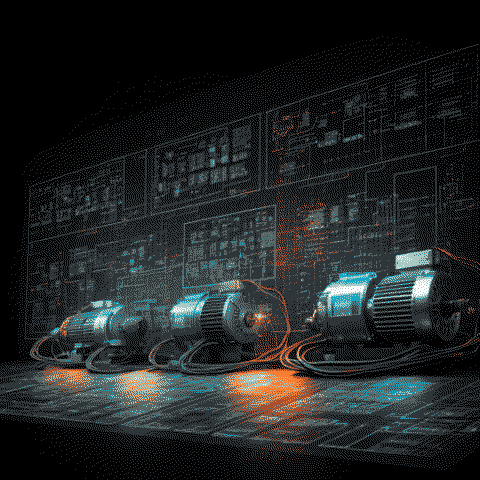

Головна кафедри Електротехніки та Електромеханіки
Кафедра електротехніки та електромеханіки (ЕТЕМ) виділена зі складу кафедри енергетики Дніпродзержинського державного технічного університету (тоді – індустріального інституту) в 1971 році. Кафедра входить до складу енергетичного факультету ДДТУ і веде підготовку здобувачів вищої освіти першого (бакалаврського), другого (магістерського) та третього (освітньо-наукового) рівнів.
Здобувачі, отримавши диплом про вищу освіту зі спеціальністю141 «Електроенергетика, електротехніка та електромеханіка», можуть пов'язати свою подальшу трудову діяльність із розробкою, дослідженням, обслуговуванням, налагодженням, ремонтом і експлуатацією електрообладнання і засобів автоматизації виробничих процесів, а також організацією перерахованих робіт, налагодженням, діагностикою, експлуатацією електрообладнання автомобілів, тракторів, міського, внутрішньозаводського, внутрішнцехового, кар'єрного й рудничного транспорту, автономних підйомно-транспортних і дорожніх машин і комплексів, а також організацією перерахованих робі, формуванням нинішньої й перспективної енергетичної політики організацій і підприємств в умовах сучасного енергоринку, наявних енергетичних ресурсів, конкретного технологічного процесу та з урахуванням економічних аспектів енергоспоживання.
Випускники кафедри працюють на ПРаТ "Дніпровський меткомбінат" – найбільше підприємство міста, один з найбільших металургійних заводів України, ДТЕК, Укргідроенерго Середньоднапровська ГЕС. Ряд випускників працює на великих обласних підприємствах, таких як ДП ВО «Південмаш» ім. О. М. Макарова або КБ «Південне» ім. М. К. Янгеля і на інших підприємствах металургійної, машинобудівної, хімічної галузі.
Випускники кафедри також працюють у США, Німеччині, Іспанії, Ізраїлю, Великобританії та інших країнах.
На кафедрі ЕТЕМ працюють 12 викладачів, з них:
- 2 доктори наук, професори: Віктор Борисович Нізімов;Олександр Валентинович Садовой;
- 8 кандидатів наук, доцентів: Роман Сергійович Волянський, Олександр Леонідович Дерець, Юрій Михайлович Клименко, Олег Володимирович Клюєв, Сергій Вікторович Количев, Юлія Віталіївна Сохіна, Євген Дмитрович Хмельницький, Юрій Юрійович Шрамко
- 2 асистенти: Ігор Вячеславович Філін, Роєнко Юхим Сергійович.
Завідувачем кафедри з 1996 року був доктор технічних наук, професор, проректор з наукової роботи ДДТУ Олександр Валентинович Садовой.
З 2015 року і по теперішній час обов`язки завідувача кафедрою виконує доктор технічних наук, професор Нізімов Віктор Борисович.
Співробітники кафедри ЕТЕМ ведуть активну науково-дослідну роботу в галузі оптимального керування електроприводами й технологічними процесами, керування синхронними електроприводами з накопичувачами енергії, мікропроцесорного і мікроконтролерного керування технологічними процесами, контролю й керування якістю електроенергії та інших напрямків. За останні роки викладачами кафедри видано 10 підручників, навчальних посібників і монографій.
Протягом останніх п'яти років ними опубліковано в наукових журналах і збірниках більш ніж 150 статей. Студенти кафедри щорічно посідали та посідають призові місця на олімпіадах і конкурсах наукових робіт.
Кафедра підтримує і розвиває тісні наукові зв'язки з колегами із близького і далекого зарубіжжя.
Придбання практичних навичок і перевірку теоретичних знань студенти кафедри здійснюють в 16-ти навчальних лабораторіях кафедри, серед яких лабораторія ТОЕ, лабораторія електричних машин, лабораторія комплектного електропривода, лабораторія систем керування електроприводами та інші. Кафедральний комп'ютерний зал дозволяє виконувати проектування й моделювання об'єктів і процесів за допомогою новітнього програмного забезпечення.
На кафедрі функціонує електронна бібліотека, яка налічує понад 30000 екземплярів; усі учбово-методичні та останні наукові розробки викладачів доступні студентам в електронній формі.
На кафедрі здобувачі вищої освіти мають можливість доступу до наукометричних баз Scopus та Web of Sciencey та платформи ScienceDirect.
Будь-які питання про кафедру, спеціальність, вступ і процес навчання можна задати за електронною адресою кафедри: elm@dstu.dp.ua
Зайти на сайт кафедри електротехніки та електромеханіки можна за посиланням http://elm-dstu-edu.org.ua/
Поштова адреса кафедри: кафедра електротехніки та електромеханіки, Дніпровський державний технічний університет, вул. Дніпробудівська, 2а, Кам'янське, 51918.
Кафедра розташовується в VII корпусі ДДТУ; викладацькі аудиторії – 7-48, 7-52а.